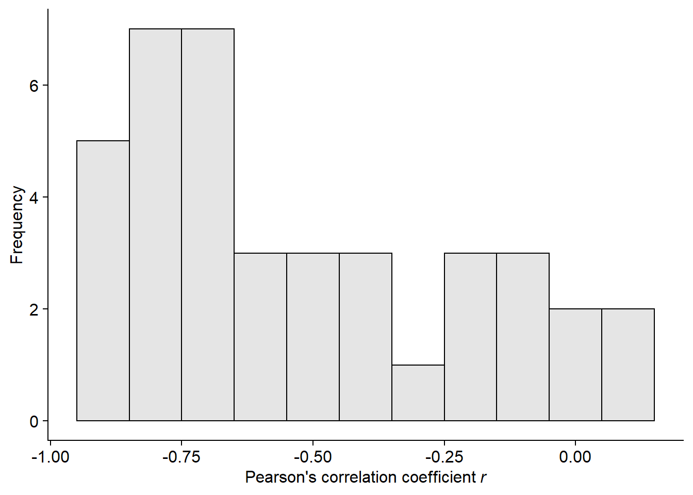
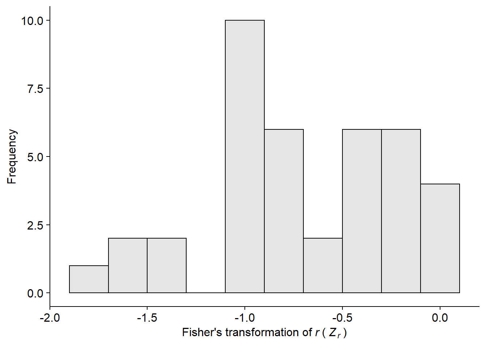
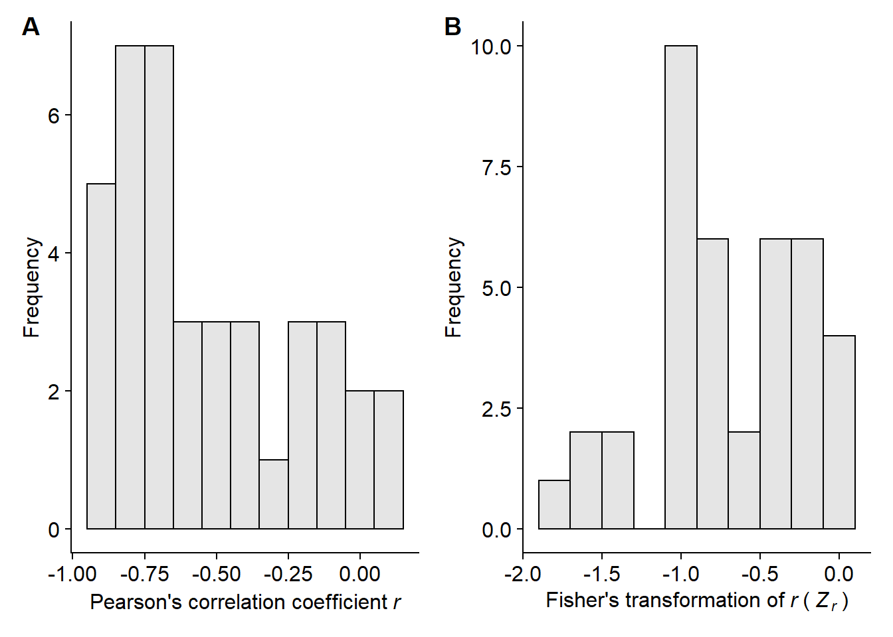

library(tidyverse)
library(metafor)
library(ggthemes)
library(cowplot)
library(scales)
library(knitr)
library(broom)
library(dplyr)
library(readxl)
library(gsheet)
library(janitor)
library(ggforce)
fls_dat <- read_csv("fls_data.csv") %>%
filter(mean_yld != "NA") %>%
filter(mean_sev != "NA") %>%
filter(study!= 60) %>%
group_by(study) %>%
mutate(difer = max(mean_sev) - min(mean_sev)) %>%
filter(difer>5) #selecting studies with more than 5% difference in disease severity across treatments##
## -- Column specification -----------------------------------------------------------------------
## cols(
## .default = col_double(),
## location = col_character(),
## state = col_character(),
## cultivar = col_character(),
## planting_date = col_character(),
## app_date = col_character(),
## growth_stage = col_character(),
## brand_name = col_character(),
## group = col_character(),
## active_ingred = col_character(),
## rating_disease = col_character()
## )
## i Use `spec()` for the full column specifications.head(fls_dat)length(unique(fls_dat$study))## [1] 39Here we will group the yield data into two production situations, low or high yield, based on median of yields across trials.
summary(fls_dat$mean_yld)## Min. 1st Qu. Median Mean 3rd Qu. Max.
## 1175 2697 3352 3355 4082 5309fls_dat <- fls_dat %>%
mutate(yield_class = case_when(mean_yld <= 3352 ~ "Low",
mean_yld > 3352 ~ "High"))
a1 = fls_dat %>%
group_by(study, yield_class) %>%
summarise() %>%
tabyl(yield_class)
a1 Here we will group the severity data into two disease pressure situations, low or high, based on median of disease severity in the Check.
summary(fls_dat$sev_check) # the median value of the FLS severity in the untreated plots was 34.57%## Min. 1st Qu. Median Mean 3rd Qu. Max.
## 3.132 13.150 34.575 33.465 45.500 86.250fls_dat <- fls_dat %>%
mutate(sev_class = case_when(sev_check <= 34.57 ~ "Low",
sev_check > 34.57 ~ "High"))
a2 = fls_dat %>%
group_by(study, sev_class) %>%
summarise() %>%
tabyl(sev_class)
a2We will use the lmer function of the lme4 to fit three different kinds of mixed models: random intercepts and slopes, random intercepts only and random slopes only.
library(lme4)
# null model
mix_yld <- lmer(mean_yld ~ 1 + (1 | study), data = fls_dat, REML = F)
# random intercept and slopes
mix_yld1 <- lmer(mean_yld ~ mean_sev + (mean_sev | study), data = fls_dat, REML = F)
# random slopes
mix_yld2 <- lmer(mean_yld ~ mean_sev + (1 | mean_sev), data = fls_dat, REML = F)
# random intercepts
mix_yld3 <- lmer(mean_yld ~ mean_sev + (1 | study), data = fls_dat, REML = F)Here we can check which model best fitted the data based on the lowest AIC, which was the one with both intercepts and slopes as random effects.
AIC(mix_yld, mix_yld1, mix_yld2, mix_yld3)summary(mix_yld1)## Linear mixed model fit by maximum likelihood ['lmerMod']
## Formula: mean_yld ~ mean_sev + (mean_sev | study)
## Data: fls_dat
##
## AIC BIC logLik deviance df.resid
## 7688.5 7714.3 -3838.2 7676.5 543
##
## Scaled residuals:
## Min 1Q Median 3Q Max
## -4.3928 -0.5284 0.0149 0.5278 4.7995
##
## Random effects:
## Groups Name Variance Std.Dev. Corr
## study (Intercept) 980912.9 990.41
## mean_sev 101.2 10.06 -0.02
## Residual 43160.9 207.75
## Number of obs: 549, groups: study, 39
##
## Fixed effects:
## Estimate Std. Error t value
## (Intercept) 3719.899 161.550 23.026
## mean_sev -19.080 2.293 -8.322
##
## Correlation of Fixed Effects:
## (Intr)
## mean_sev -0.118
## optimizer (nloptwrap) convergence code: 0 (OK)
## Model failed to converge with max|grad| = 0.023656 (tol = 0.002, component 1)confint.merMod(mix_yld1, method = "Wald")## 2.5 % 97.5 %
## .sig01 NA NA
## .sig02 NA NA
## .sig03 NA NA
## .sigma NA NA
## (Intercept) 3403.26701 4036.53087
## mean_sev -23.57404 -14.58645Let’s include an interaction term and test whether variance was significantly reduced based on likelihood ratio test.
mix_yld5 <- lmer(mean_yld ~ mean_sev * sev_class + (mean_sev | study), data = fls_dat, REML = F)AIC(mix_yld1, mix_yld5)anova(mix_yld1, mix_yld5, test = "Chisq")summary(mix_yld5)## Linear mixed model fit by maximum likelihood ['lmerMod']
## Formula: mean_yld ~ mean_sev * sev_class + (mean_sev | study)
## Data: fls_dat
##
## AIC BIC logLik deviance df.resid
## 7689.1 7723.5 -3836.5 7673.1 541
##
## Scaled residuals:
## Min 1Q Median 3Q Max
## -4.4194 -0.5306 0.0165 0.5188 4.8051
##
## Random effects:
## Groups Name Variance Std.Dev. Corr
## study (Intercept) 906307.5 952.00
## mean_sev 100.8 10.04 -0.02
## Residual 43133.0 207.68
## Number of obs: 549, groups: study, 39
##
## Fixed effects:
## Estimate Std. Error t value
## (Intercept) 3983.069 213.985 18.614
## mean_sev -18.740 2.598 -7.212
## sev_classLow -555.199 311.575 -1.782
## mean_sev:sev_classLow -2.195 5.507 -0.399
##
## Correlation of Fixed Effects:
## (Intr) men_sv sv_clL
## mean_sev -0.136
## sev_classLw -0.687 0.094
## mn_sv:sv_cL 0.064 -0.472 -0.118confint(mix_yld5) ## Computing profile confidence intervals ...## 2.5 % 97.5 %
## .sig01 769.4102731 1215.7194473
## .sig02 -0.4981247 0.4909297
## .sig03 6.8210550 14.5963431
## .sigma 195.2409474 221.5004802
## (Intercept) 3554.4819457 4413.4675512
## mean_sev -24.0253307 -13.4342442
## sev_classLow -1182.2874197 69.6964838
## mean_sev:sev_classLow -13.5722969 9.0467374Let’s include an interaction term and test whether variance was significantly reduced based on likelihood ratio test.
mix_yld8 <- lmer(mean_yld ~ mean_sev * yield_class + (mean_sev | study), data = fls_dat, REML = F)AIC(mix_yld1, mix_yld8)anova(mix_yld1, mix_yld8, test = "Chisq")summary(mix_yld8)## Linear mixed model fit by maximum likelihood ['lmerMod']
## Formula: mean_yld ~ mean_sev * yield_class + (mean_sev | study)
## Data: fls_dat
##
## AIC BIC logLik deviance df.resid
## 7607.9 7642.4 -3796.0 7591.9 541
##
## Scaled residuals:
## Min 1Q Median 3Q Max
## -4.3423 -0.5478 -0.0051 0.5032 5.1193
##
## Random effects:
## Groups Name Variance Std.Dev. Corr
## study (Intercept) 723401.03 850.530
## mean_sev 98.99 9.949 -0.10
## Residual 37283.72 193.090
## Number of obs: 549, groups: study, 39
##
## Fixed effects:
## Estimate Std. Error t value
## (Intercept) 3842.704 141.588 27.140
## mean_sev -16.203 2.454 -6.602
## yield_classLow -387.578 54.345 -7.132
## mean_sev:yield_classLow 1.819 1.802 1.010
##
## Correlation of Fixed Effects:
## (Intr) men_sv yld_cL
## mean_sev -0.214
## yild_clssLw -0.173 0.193
## mn_sv:yld_L 0.165 -0.398 -0.744library(emmeans)
library(multcomp)
cld(emmeans(mix_yld8, ~ mean_sev * yield_class))Extract the random coefficients (BLUES).
blup <- coef(mix_yld1)$study
colnames(blup) <- c("Intercept", "Slope")
summary(blup)## Intercept Slope
## Min. :1386 Min. :-39.85
## 1st Qu.:3043 1st Qu.:-23.11
## Median :3863 Median :-18.25
## Mean :3720 Mean :-19.08
## 3rd Qu.:4442 3rd Qu.:-15.02
## Max. :5160 Max. : -4.53Calculate the interdecile range for the BLUEs of the slopes and intercepts
# Intercept
dec90_i <- quantile(blup$Intercept, probs = c(.9))
dec10_i <- quantile(blup$Intercept, probs = c(.1))
dec90_i - dec10_i## 90%
## 2488.298# Slopes
dec90_s <- quantile(blup$Slope, probs = c(.9))
dec10_s <- quantile(blup$Slope, probs = c(.1))
dec90_s - dec10_s## 90%
## 18.00895We firstly summarize the Fisher’s z as the effect size for the study of the strength of the association between FLS severity and soybean yield.
cor_yld_sev <- fls_dat %>%
group_by(study) %>%
do(tidy(cor.test(.$mean_sev, .$mean_yld), method = "pearson"))
cor_yld_sevsummary(cor_yld_sev$estimate)## Min. 1st Qu. Median Mean 3rd Qu. Max.
## -0.94060 -0.76001 -0.63812 -0.52565 -0.24862 0.08662hist_pears <- ggplot(cor_yld_sev, aes(estimate)) +
geom_histogram(bin = 0.1, binwidth = 0.1, color = "black" , fill = "black",
alpha = 0.1) +
theme_half_open()+
theme(axis.title = element_text(size=12),
axis.text = element_text(size=12))+
labs(x = expression("Pearson's correlation coefficient" ~italic("r")),
y = "Frequency")## Warning: Ignoring unknown parameters: binhist_pears
Let’s extract the first row of each study from the fls_dat data frame and then combine with the new cor_yld_sev data frame that contains the correlation statistics. We will add a new column (n) for the number of data points per study using the mutate function.
fls_dat2 = fls_dat %>%
group_by(study) %>%
filter(row_number() == 1)
fls_dat3 <- full_join(cor_yld_sev, fls_dat2, by = "study") %>%
mutate(n2 = parameter + 2)
yield_max <- fls_dat %>%
filter(mean_yld != "NA") %>%
group_by(study) %>%
summarize(max_yield = max(mean_yld))
# Grouping the yield max information in a new column
fls_dat3 <- left_join(fls_dat3, yield_max) %>%
mutate(yield_class = case_when(max_yield <= 3352 ~ "low",
max_yield > 3352 ~ "high")) %>%
mutate(sev_class = case_when(sev_check <= 34 ~ "low",
sev_check > 34 ~ "high"))## Joining, by = "study"fls_dat3The Fisher’s z was used as effect-size because of its better statistical property than the Pearson’s r. We obtain the Fisher’s z and sampling variance of each study with the escalc function of the metafor package that calculates and adds them to the data frame. Note that the effect-size and sampling variance are indicated by yi and vi, the standard notations used in metafor when using the escalc function. Let’s see how the data frame looks like.
library(metafor)
fls_dat4 <- escalc(measure = "ZCOR", ri = estimate, ni = n2, data = fls_dat3)summary(fls_dat4$yi)## Min. 1st Qu. Median Mean 3rd Qu. Max.
## -1.74323 -0.99628 -0.75499 -0.69970 -0.25534 0.08684data.frame(fls_dat4)hist_fisher <- ggplot(fls_dat4, aes(yi)) +
geom_histogram(bin = 0.1, binwidth = 0.2, color = "black" , fill = "black",
alpha = 0.1) +
theme_half_open()+
theme(axis.title = element_text(size=12),
axis.text = element_text(size=12))+
labs(x = expression("Fisher's transformation of"~ italic("r")~ "("~italic("Z" [r])~")"),
y = "Frequency")## Warning: Ignoring unknown parameters: binhist_fisher
library(patchwork)
(hist_pears + hist_fisher) +
plot_layout(nrow = 1)+
plot_annotation(tag_levels = "A")
ggsave("Figures/Corr_coeff.png", height=3, width=8, dpi = 600, bg = "white")A random-effects meta-analytic model was fitted to these data using a maximum likelihood estimator for the amount of heterogeneity.
fls_cor_yld <- rma.uni(yi, vi, method = "ML", data = fls_dat4)
summary(fls_cor_yld)##
## Random-Effects Model (k = 39; tau^2 estimator: ML)
##
## logLik deviance AIC BIC AICc
## -27.8417 76.2611 59.6835 63.0106 60.0168
##
## tau^2 (estimated amount of total heterogeneity): 0.1556 (SE = 0.0564)
## tau (square root of estimated tau^2 value): 0.3944
## I^2 (total heterogeneity / total variability): 63.23%
## H^2 (total variability / sampling variability): 2.72
##
## Test for Heterogeneity:
## Q(df = 38) = 109.0113, p-val < .0001
##
## Model Results:
##
## estimate se zval pval ci.lb ci.ub
## -0.6954 0.0801 -8.6793 <.0001 -0.8525 -0.5384 ***
##
## ---
## Signif. codes: 0 '***' 0.001 '**' 0.01 '*' 0.05 '.' 0.1 ' ' 1Back-transform z to obtain overall mean r.
pred_fls <- predict(fls_cor_yld, transf = transf.ztor)
pred_fls##
## pred ci.lb ci.ub cr.lb cr.ub
## -0.6015 -0.6924 -0.4918 -0.9023 0.0931The random-effects model fitted previously assumes that the heterogeneity in the true correlation coefficients (Fisher’s z) is purely random. However, there may be differences among the individual effects that are (at least in part) related to study-specific variables. These variable can be treated as “moderators” in the model. We considered here: disease and yield levels.
The mixed-effect models test one moderator variable, each at a time, as a fixed effects. The goal was to examine the extent that the moderators included in the model influence the size of the average true effect. The heterogeneity among the true effect-sizes is evaluated based on significance of the Cochran Q test and the I2 index that measures the extent of heterogeneity of the true effect-sizes.
fls_cor_yld_sev2 <- rma.uni(yi, vi, mods = ~sev_class, method = "ML", data = fls_dat4)
fls_cor_yld_sev2##
## Mixed-Effects Model (k = 39; tau^2 estimator: ML)
##
## tau^2 (estimated amount of residual heterogeneity): 0.0901 (SE = 0.0412)
## tau (square root of estimated tau^2 value): 0.3001
## I^2 (residual heterogeneity / unaccounted variability): 49.83%
## H^2 (unaccounted variability / sampling variability): 1.99
## R^2 (amount of heterogeneity accounted for): 42.11%
##
## Test for Residual Heterogeneity:
## QE(df = 37) = 77.6753, p-val = 0.0001
##
## Test of Moderators (coefficient 2):
## QM(df = 1) = 13.3100, p-val = 0.0003
##
## Model Results:
##
## estimate se zval pval ci.lb ci.ub
## intrcpt -0.9263 0.0936 -9.8991 <.0001 -1.1097 -0.7429 ***
## sev_classlow 0.5026 0.1378 3.6483 0.0003 0.2326 0.7726 ***
##
## ---
## Signif. codes: 0 '***' 0.001 '**' 0.01 '*' 0.05 '.' 0.1 ' ' 1fls_cor_yld_yld2 <- rma.uni(yi, vi, mods = ~ yield_class, method = "ML", data = fls_dat4)
fls_cor_yld_yld2##
## Mixed-Effects Model (k = 39; tau^2 estimator: ML)
##
## tau^2 (estimated amount of residual heterogeneity): 0.1528 (SE = 0.0558)
## tau (square root of estimated tau^2 value): 0.3909
## I^2 (residual heterogeneity / unaccounted variability): 62.70%
## H^2 (unaccounted variability / sampling variability): 2.68
## R^2 (amount of heterogeneity accounted for): 1.77%
##
## Test for Residual Heterogeneity:
## QE(df = 37) = 107.9545, p-val < .0001
##
## Test of Moderators (coefficient 2):
## QM(df = 1) = 0.4792, p-val = 0.4888
##
## Model Results:
##
## estimate se zval pval ci.lb ci.ub
## intrcpt -0.7288 0.0931 -7.8254 <.0001 -0.9113 -0.5463 ***
## yield_classlow 0.1245 0.1799 0.6923 0.4888 -0.2281 0.4771
##
## ---
## Signif. codes: 0 '***' 0.001 '**' 0.01 '*' 0.05 '.' 0.1 ' ' 1